— Journal · AI · Editorial
The Paris 2024 Olympics were gearing up to be an extraordinary affair, blending athleticism with a whimsical, unmistakably French sense of spectacle. As a studio obsessed with both Paris and grand celebrations, we asked ourselves a ridiculous question: what would the Games look like if they were a wedding?
Using AI image generation, we built a full visual editorial: brides carrying the Olympic torch, grooms fencing in couture, athletes leaping in front of the Eiffel Tower, and stadiums carpeted in rose petals like the world's largest ballroom. Brides row a boat down the Seine, a nod to the opening ceremony; a torchbearer holds the flame in flowing white. Absurd? Completely. Gorgeous? We think so too.
Beyond the fun, this project was a serious technical exercise. Art-directing AI at editorial quality demands the same disciplines as a real shoot: consistent lighting logic, a coherent colour story, wardrobe continuity and ruthless curation. Of the thousands of frames generated, only a handful survived our edit ... the same ratio, honestly, as a real wedding day.
This experiment became the seed of our AI masterclass for wedding planners and designers. The tools are here; the taste is the differentiator. And taste, after a decade of film and VFX, is the one thing we never outsource.
The editorial — Paris 2024, reimagined as a wedding
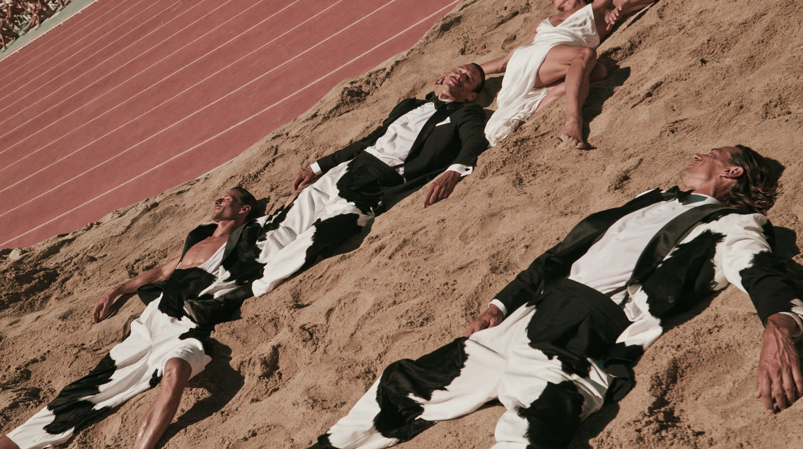
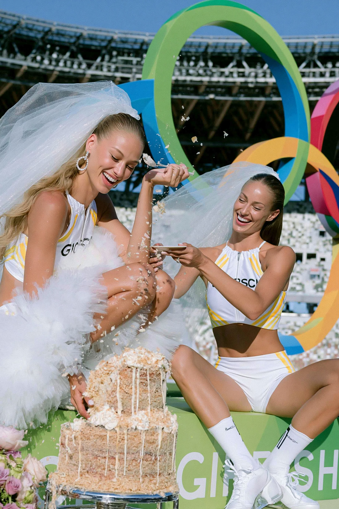
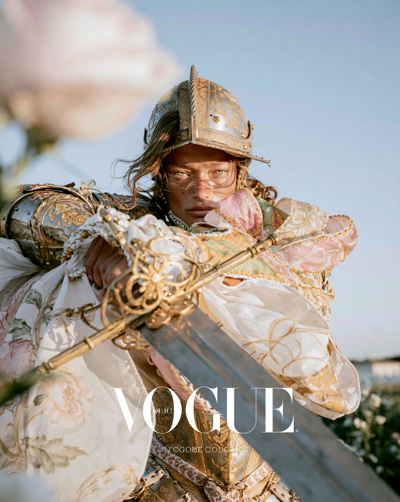
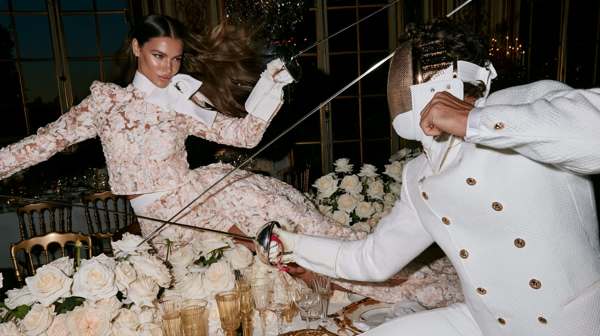
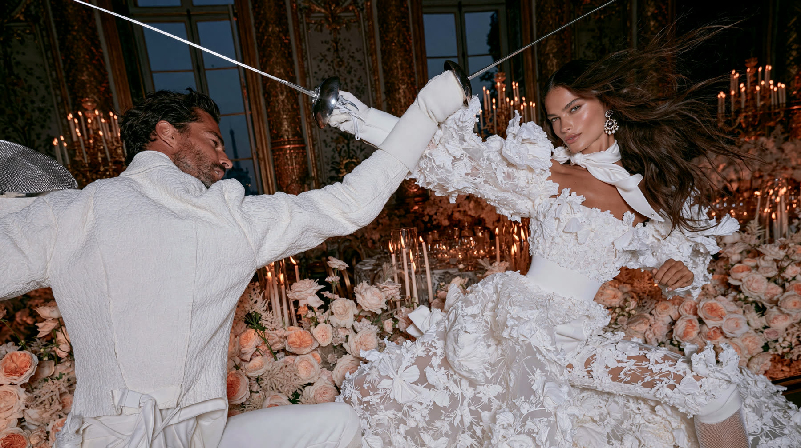
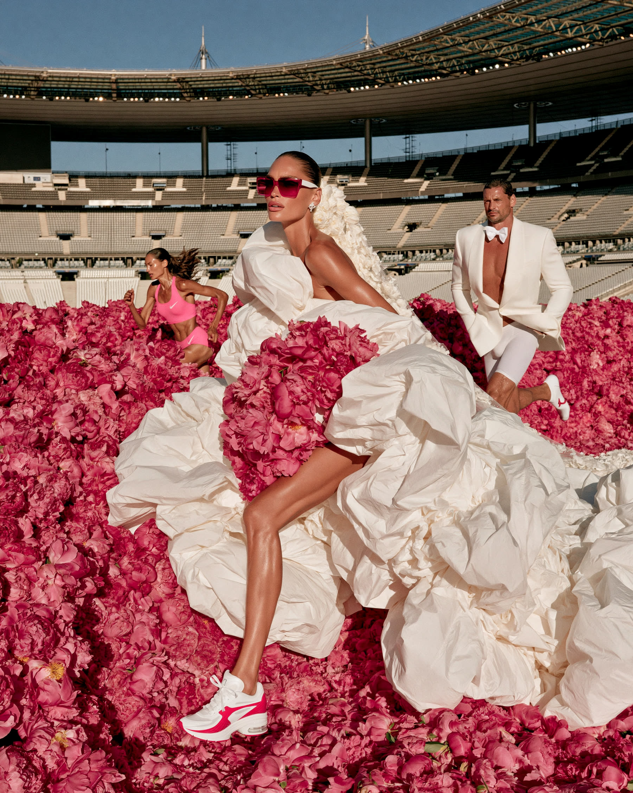
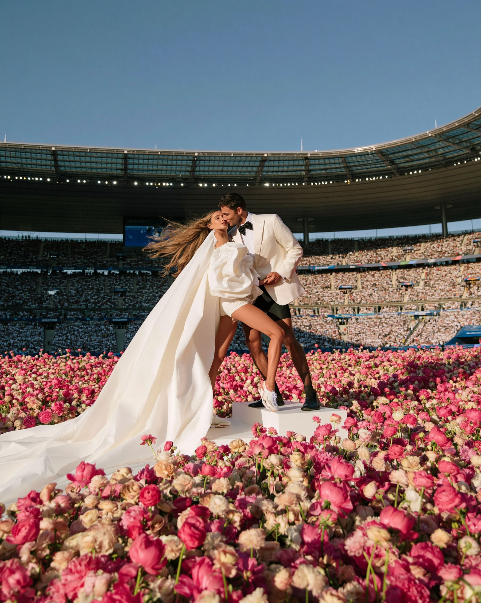
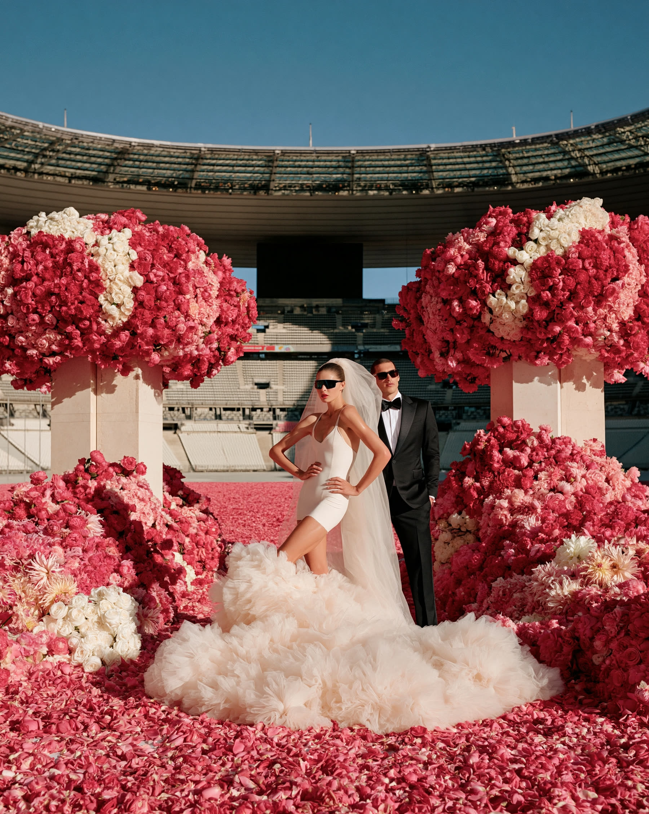
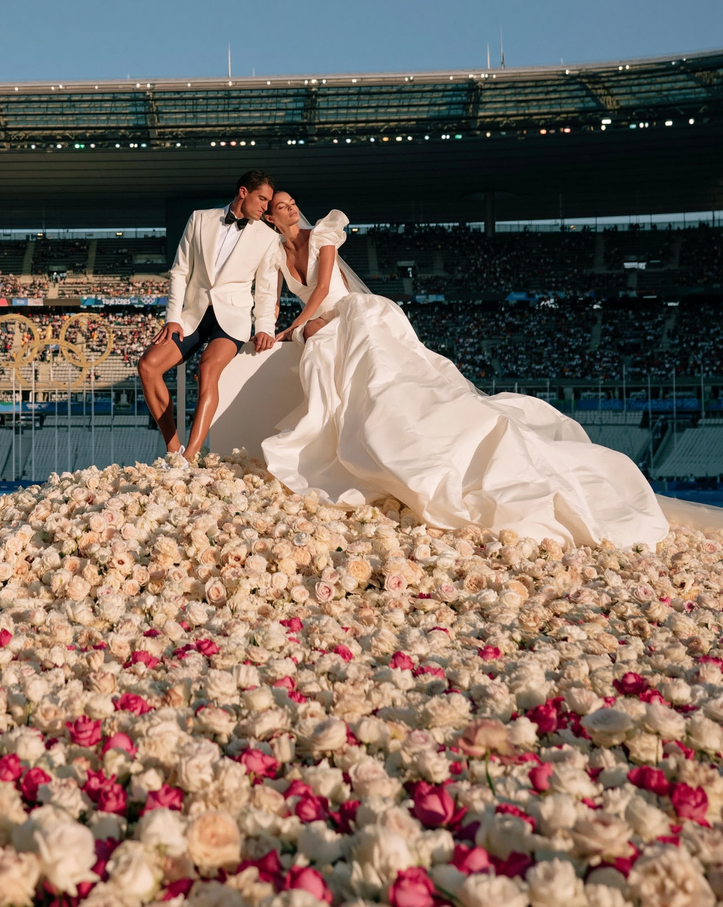
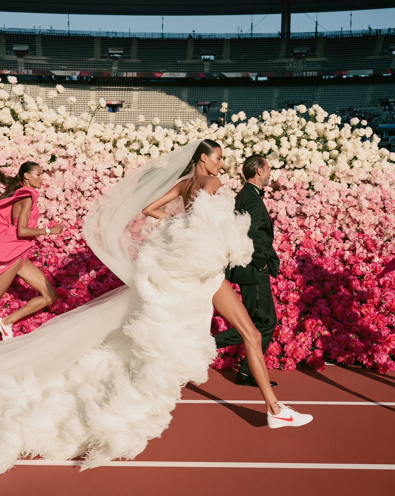
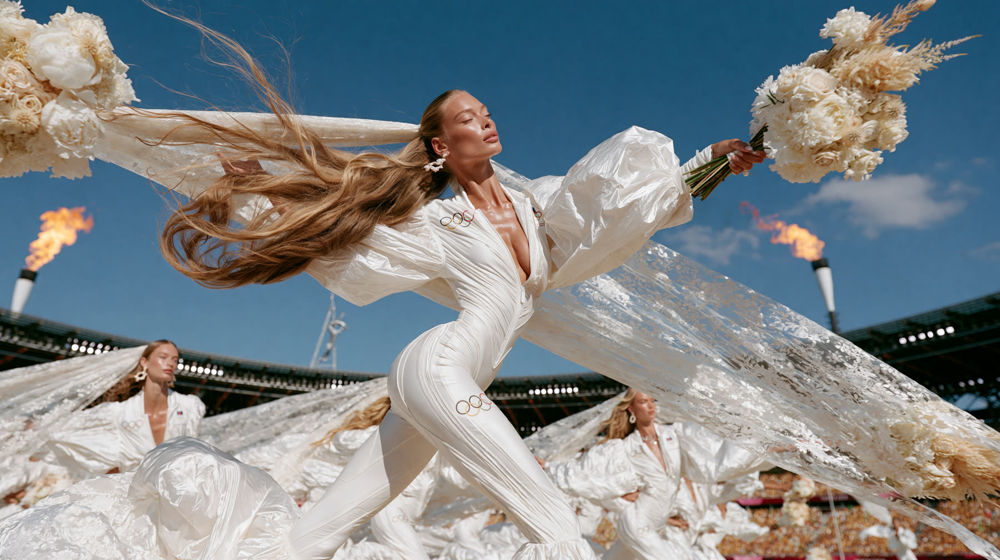
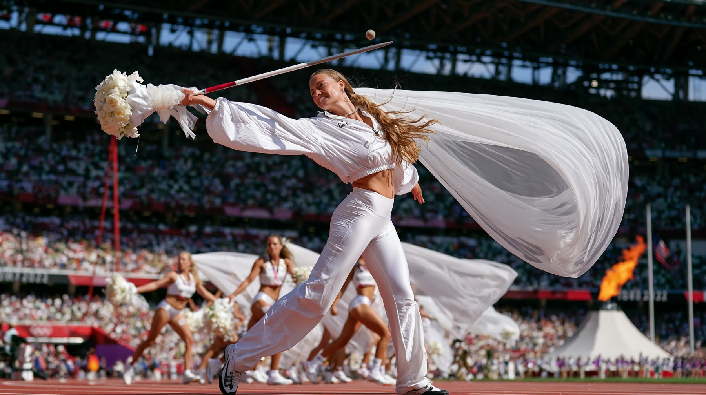
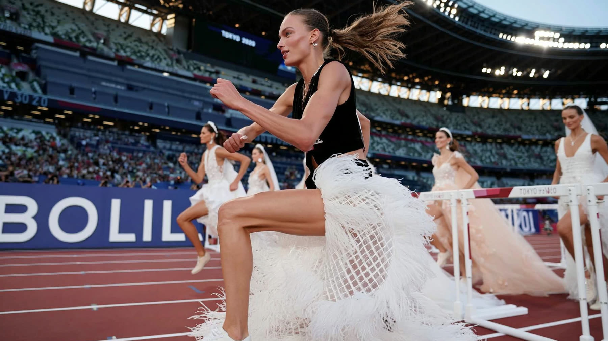
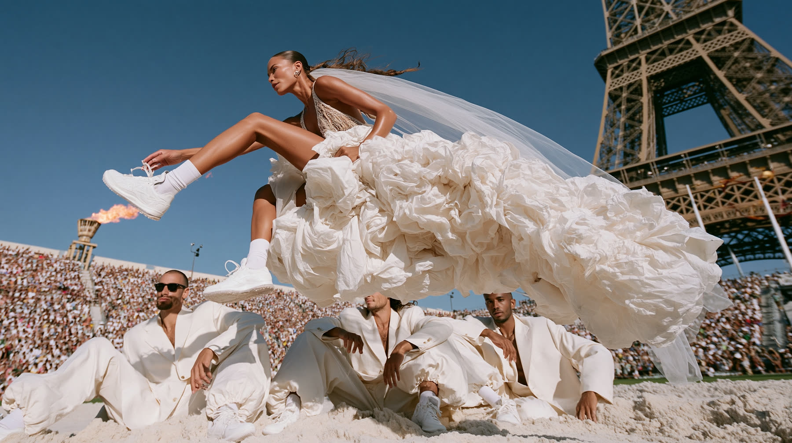
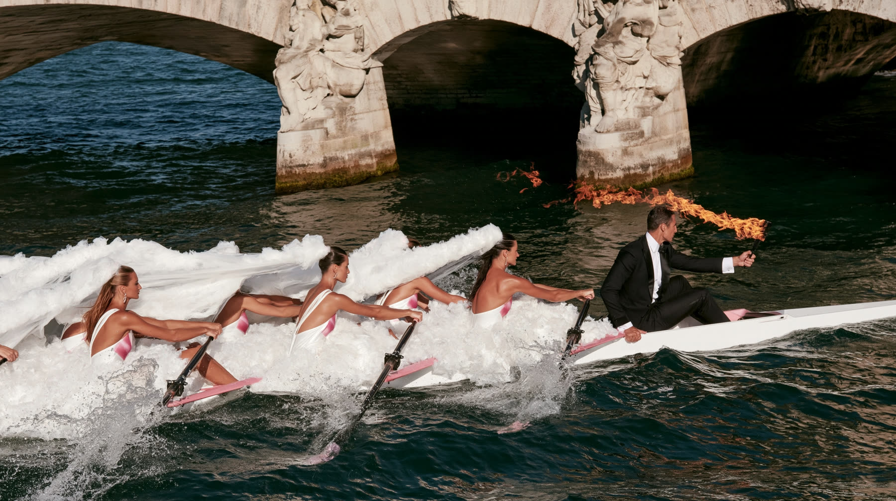
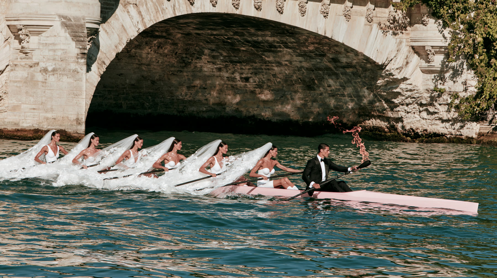
— Begin Your Journey